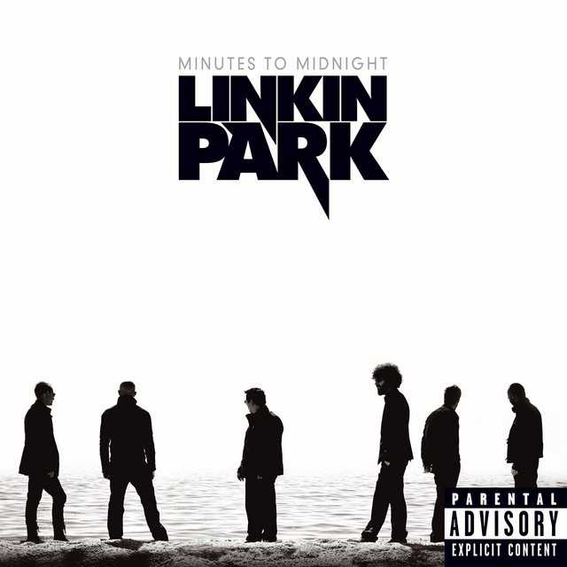
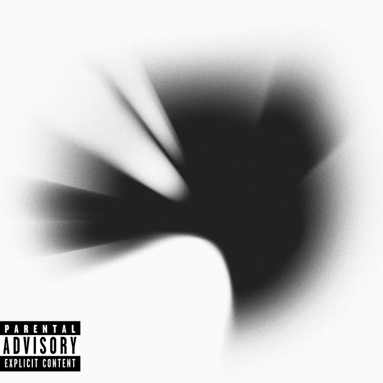
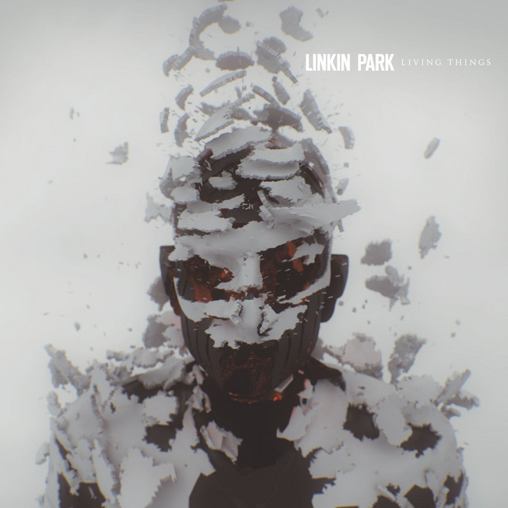
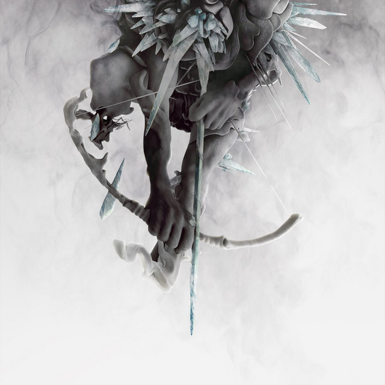

Discografía
Hybrid Theory 2000
- Papercut
- One Step Closer
- With You
- Points Of Authority
- Crawling
- Runaway
- By Myself
- In The End
- A Place Of My Head
- Forgotten
- Cure For The Itch
- Pushing Me Away

Meteora 2003
- Foreword
- Don't Stay
- Somewhere I Belong
- Lying from You
- Hit the Floor
- Easier to Run
- Faint
- Figure.09
- Breaking the Habit
- From the Inside
- Nobody's Listening
- Session
- Numb

Minutes To Midnight 2007
- Wake (Intro)
- Given Up
- Leave Out All the Rest
- Bleed It Out
- Shadow of the Day
- What I've Done
- Hands Held High
- No More Sorrow
- Valentine's Day
- In Between
- In Pieces
- The Little Things Give You Away

A Thousand Suns 2010
- The Requiem
- The Radiance
- Burning in the Skies
- Empty Spaces
- When They Come for Me
- Robot Boy
- Jornada Del Muerto
- Waiting for the End
- Blackout
- Wretches and Kings
- Wisdom, Justice, and Love
- Iridescent
- Fallout
- The Catalyst
- The Messenger

Living Things 2012
- Lost in the Echo
- In My Remains
- Burn It Down
- Lies Greed Misery
- I'll Be Gone
- Castle of Glass
- Victimized
- Roads Untraveled
- Skin to Bone
- Until It Breaks
- Tinfoil
- Powerless

The Hunting Party 2014
- Keys to the Kingdom
- All for Nothing
- Guilty All the Same
- The Summoning
- War
- Wastelands
- Until It's Gone
- Rebellion
- Mark the Graves
- Drawbar
- Final Masquerade
- A Line In the Sand

One More Light 2017
- Nobody Can Save Me
- Good Goodbye
- Talking to Myself
- Battle Symphony
- Invisible
- Heavy
- Sorry for Now
- Halfway Right
- One More Light
- Sharp Edges